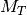
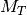
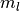
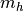
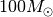
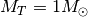
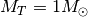
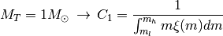

12.1. Synthetic clusters¶
Todo
Not finished.
The process by which synthetic star clusters (SSC) are generated by ASteCA involves several steps, described in the sections that follow.
The result of these steps is a SSC with given metallicity, age, extinction, distance, mass and binarity values, affected by a maximum magnitude cut, completeness star removal and photometric errors mimicking those of the input observed cluster.
12.1.1. Isochrone interpolation¶
The first step is done by the interp_isoch function stored in the
get_isoch_params function.
This function generates 1500 points in the theoretical isochrone, as shown
in Fig. 12.1.

Fig. 12.1 Interpolation of theoretical isochrone of given metallicity and age.
12.1.2. Isochrone shift¶
Todo
Not finished.

Fig. 12.2 Shift interpolated theoretical isochrone according to given extinction and distance modulus values.
12.1.3. Maximum magnitude cut¶
Todo
Not finished.

Fig. 12.3 Remove stars beyond the maximum magnitude value in the observed cluster.
12.1.4. Mass distribution¶
Todo
Not finished.
12.1.5. IMF sampling¶
The initial mass function (IMF) is the distribution of initial masses
for a population of stars. For a population of  stars with
masses
stars with
masses  and a total mass of :
and a total mass of :

where  and  are the mass limits for the IMF
( is fixed to  in the code) and
 is a normalization constant. Setting the total mass to unity,
, allows us to obtain the normalization constant
is a normalization constant. Setting the total mass to unity,
, allows us to obtain the normalization constant
 and treat the normalized IMF as a PDF:
and treat the normalized IMF as a PDF:

and thus the normalized IMF can be written as:

This is the first step, performed by the get-IMF-PDF function for
a given selected IMF (Chabrier 2001, Kroupa et al. 1993, Kroupa 2002)
Once the PDF is generated, every time a new synthetic cluster is created
the get-mass-dist function is called from within synth-cluster.
This former function takes the PDF and samples a number of masses
randomly from it, following the probabilities distribution given by the
PDF, until the mass fixed by the total-mass parameter is achieved.
The get-mass-dist function thus returns a distribution of masses
probabilistically sampled from a certain IMF, whose masses sum up to a
total cluster mass.
12.1.6. Binarity¶
Todo
Not finished.
12.1.7. Completeness¶
Todo
Not finished.
12.1.8. Errors¶
Todo
Not finished.